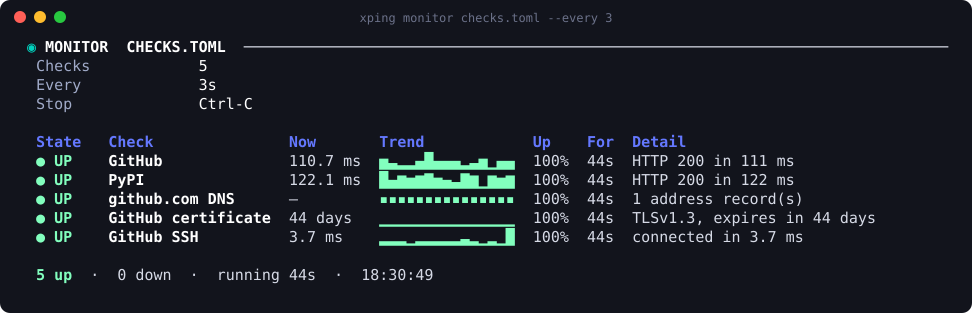

██╗ ██╗██████╗ ██╗███╗ ██╗ ██████╗ ╚██╗██╔╝██╔══██╗██║████╗ ██║██╔════╝ ╚███╔╝ ██████╔╝██║██╔██╗ ██║██║ ███╗ ██╔██╗ ██╔═══╝ ██║██║╚██╗██║██║ ██║ ██╔╝ ██╗██║ ██║██║ ╚████║╚██████╔╝ ╚═╝ ╚═╝╚═╝ ╚═╝╚═╝ ╚═══╝ ╚═════╝
ping · traceroute · MTR · DNS · TLS · HTTP
a live monitor and a connectivity doctor
pipx install xping · brew · snap · apt · dnf
